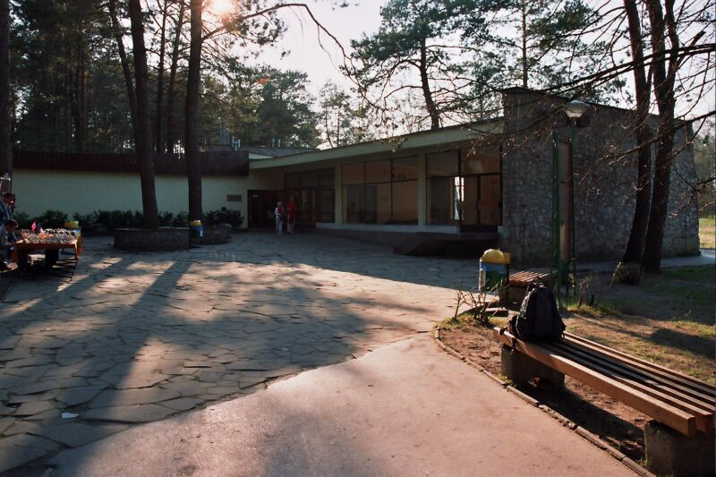

Jaskinia Raj
wapienna jaskinia krasowa położona w pobliżu Chęcin (Góry Świętokrzyskie) w województwie świętokrzyskim na terenie rezerwatu przyrody Jaskinia Raj, 11 km na południowy zachód od Kielc. Wyróżnia się wyjątkowo bogatą, różnorodną i dobrze zachowaną szatą naciekową; obok Jaskini Niedźwiedziej w Sudetach należy do unikatowych w Polsce obiektów krasowych. Jest udostępniona dla ruchu turystycznego.